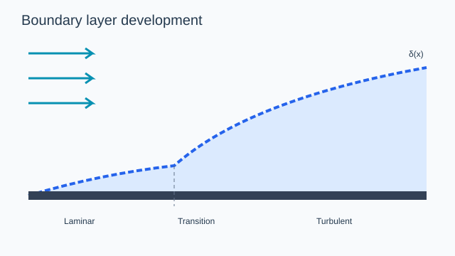
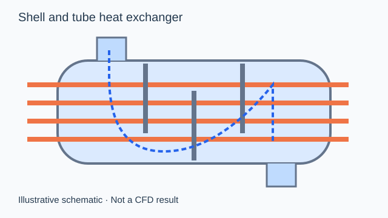

Araştırma Alanları
Sanal Mühendislik Laboratuvarı


Akademik Yayınlar
Bilimsel yayınlar ve akademik profil.
Tüm yayınları görüntüleAkademik Profiller
Google ScholarSeçilmiş yayınlar
Journal of Aviation, 10(3), 445–454 (2026)
International Polymer Processing (2026)
Doğu Fen Bilimleri Dergisi, 9(1), 74–94 (2026)